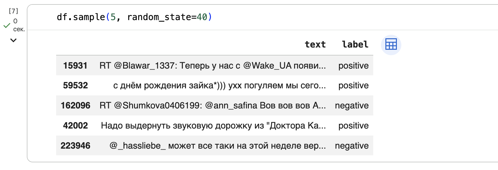

Лабораторная работа 7: Анализ текста
Цели
- Изучить основные этапы предобработки текстовых данных для задач машинного обучения.
- Освоить методы векторизации текста с использованием
CountVectorizerиTfidfVectorizer. - Рассмотреть влияние токенизации, стоп-слов, пунктуации и n-грамм на качество классификации текста.
- Построить модели для классификации твитов по тональности.
- Сравнить качество нескольких алгоритмов классификации на задаче анализа тональности.
Задачи
В рамках лабораторной работы требовалось:
- Сформировать общий датафрейм с текстами твитов и метками классов, разделить данные на обучающую и тестовую выборки
- Изучить принцип работы n-грамм
- Выполнить базовую векторизацию текста с помощью
CountVectorizer - Обучить модель
LogisticRegressionдля классификации твитов - Сравнить качество модели при использовании униграмм и триграмм
- Выполнить TF-IDF-векторизацию текста и сравнить результаты TF-IDF для униграмм, биграмм, триграмм и пентаграмм
- Применить токенизацию текста с помощью
word_tokenize - Изучить влияние стоп-слов и пунктуации на качество классификации
- Выполнить лемматизацию отдельных слов с помощью
pymorphy3 - Сравнить
LogisticRegressionс двумя альтернативными алгоритмами классификации - Оформить результаты
classification_reportв виде таблиц
Ход работы
1. Описание задачи и набора данных
Необходимо было построить модель, которая по тексту сообщения определяет его класс.
В качестве исходных данных использовался корпус русскоязычных твитов RuTweetCorp. Данные были разделены на два CSV-файла.
В файлах хранится несколько столбцов с информацией о твитах, однако для выполнения задачи классификации использовался только столбец с текстом сообщения. Для каждого набора данных дополнительно был создан столбец label, содержащий метку класса:
positive = pd.read_csv(
'positive.csv',
sep=';',
usecols=[3],
names=['text']
)
positive['label'] = 'positive'
negative = pd.read_csv(
'negative.csv',
sep=';',
usecols=[3],
names=['text']
)
negative['label'] = 'negative'
df = pd.concat([positive, negative], ignore_index=True)
Структура итогового датафрейма:
| Столбец | Описание |
|---|---|
text |
текст твита |
label |
метка тональности: positive или negative |
После объединения положительных и отрицательных твитов данные были разделены на обучающую и тестовую выборки:
x_train, x_test, y_train, y_test = train_test_split(
df.text,
df.label,
test_size=0.25,
random_state=42,
stratify=df.label
)
Параметр stratify=df.label использовался для сохранения одинакового соотношения положительных и отрицательных твитов в обучающей и тестовой выборках.
Результат разбиения:
| Выборка | Содержимое |
|---|---|
x_train |
тексты твитов для обучения |
x_test |
тексты твитов для тестирования |
y_train |
метки классов для обучающей выборки |
y_test |
метки классов для тестовой выборки |
На этом этапе данные были подготовлены к векторизации и дальнейшему обучению моделей классификации.

2. Базовая классификация с использованием CountVectorizer
После подготовки данных был рассмотрен базовый способ представления текста в числовом виде — CountVectorizer.
Перед применением векторизатора был рассмотрен принцип работы n-грамм. Для демонстрации работы n-грамм использовалась функция ngrams из библиотеки nltk:
from nltk import ngrams
sentence = 'Если б мне платили каждый раз'.split()
list(ngrams(sentence, 1))
list(ngrams(sentence, 2))
list(ngrams(sentence, 3))
На первом этапе в качестве признаков использовались униграммы, то есть отдельные слова. Для этого был создан объект CountVectorizer с параметром ngram_range=(1, 1):
from sklearn.linear_model import LogisticRegression
from sklearn.feature_extraction.text import CountVectorizer
vectorizer = CountVectorizer(ngram_range=(1, 1))
vectorized_x_train = vectorizer.fit_transform(x_train)
После векторизации была обучена модель логистической регрессии:
clf = LogisticRegression(random_state=42, max_iter=1000)
clf.fit(vectorized_x_train, y_train)
Для тестовой выборки использовался метод transform(), так как словарь признаков уже был построен на обучающих данных:
vectorized_x_test = vectorizer.transform(x_test)
pred = clf.predict(vectorized_x_test)
print(classification_report(y_test, pred))
В результате была получена базовая модель классификации, которая использует частоты отдельных слов в твитах.
Далее был проведен аналогичный эксперимент с триграммами. В этом случае признаками стали последовательности из трех подряд идущих слов:
vectorizer_3 = CountVectorizer(ngram_range=(3, 3))
vectorized_x_train_3 = vectorizer_3.fit_transform(x_train)
clf_3 = LogisticRegression(random_state=42, max_iter=1000)
clf_3.fit(vectorized_x_train_3, y_train)
vectorized_x_test_3 = vectorizer_3.transform(x_test)
pred_3 = clf_3.predict(vectorized_x_test_3)
print(classification_report(y_test, pred_3))
Результат для униграмм:
| Класс | Precision | Recall | F1-score | Support |
|---|---|---|---|---|
negative |
0.76 | 0.77 | 0.76 | 27937 |
positive |
0.77 | 0.76 | 0.77 | 28772 |
| accuracy | 0.76 | 56709 | ||
| macro avg | 0.76 | 0.76 | 0.76 | 56709 |
| weighted avg | 0.76 | 0.76 | 0.76 | 56709 |
Результат для триграмм:
| Класс | Precision | Recall | F1-score | Support |
|---|---|---|---|---|
negative |
0.57 | 0.85 | 0.68 | 27937 |
positive |
0.72 | 0.38 | 0.50 | 28772 |
| accuracy | 0.61 | 56709 | ||
| macro avg | 0.65 | 0.62 | 0.59 | 56709 |
| weighted avg | 0.65 | 0.61 | 0.59 | 56709 |
По результатам эксперимента триграммы показали более низкое качество по сравнению с униграммами. Это объясняется тем, что конкретные последовательности из трех слов редко совпадают между обучающей и тестовой выборками, особенно в коротких и неформальных текстах вроде твитов.
3. TF-IDF-векторизация текста
После базовой векторизации с помощью CountVectorizer была рассмотрена TF-IDF-векторизация. TF-IDF учитывает не только частоту слова в конкретном тексте, но и то, насколько редко оно встречается во всем корпусе.
Для работы использовался TfidfVectorizer из библиотеки sklearn:
from sklearn.feature_extraction.text import TfidfVectorizer
Сначала была построена модель на униграммах:
tfidfvectorizer_1 = TfidfVectorizer(ngram_range=(1, 1))
tfidf_vectorized_x_train_1 = tfidfvectorizer_1.fit_transform(x_train)
clf_tfidf_1 = LogisticRegression(random_state=42, max_iter=1000)
clf_tfidf_1.fit(tfidf_vectorized_x_train_1, y_train)
tfidf_vectorized_x_test_1 = tfidfvectorizer_1.transform(x_test)
pred_tfidf_1 = clf_tfidf_1.predict(tfidf_vectorized_x_test_1)
print(classification_report(y_test, pred_tfidf_1))
Далее по аналогии были рассчитаны результаты для биграмм, триграмм и пентаграмм. Это позволило сравнить, как длина n-грамм влияет на качество классификации.
| Тип признаков | ngram_range |
Описание |
|---|---|---|
| Униграммы | (1, 1) |
отдельные слова |
| Биграммы | (2, 2) |
пары слов |
| Триграммы | (3, 3) |
последовательности из трех слов |
| Пентаграммы | (5, 5) |
последовательности из пяти слов |
4. Токенизация, стоп-слова и пунктуация
Следующим этапом была рассмотрена более точная предобработка текста: токенизация, удаление стоп-слов и работа с пунктуацией.
В работе использовался токенизатор word_tokenize из библиотеки nltk:
import nltk
from nltk.tokenize import word_tokenize
nltk.download('punkt_tab')
nltk.download('stopwords')
Для удаления неинформативных слов были использованы русские стоп-слова из nltk, а также знаки пунктуации из модуля string:
from nltk.corpus import stopwords
from string import punctuation
noise = stopwords.words('russian') + list(punctuation)
После этого был создан векторизатор, который использует токенизацию и исключает стоп-слова:
smart_tokenizer = CountVectorizer(
ngram_range=(1, 1),
tokenizer=word_tokenize,
token_pattern=None,
stop_words=noise
)
smart_vectorized_x_train = smart_tokenizer.fit_transform(x_train)
clf_smart = LogisticRegression(random_state=42, max_iter=1000)
clf_smart.fit(smart_vectorized_x_train, y_train)
smart_vectorized_x_test = smart_tokenizer.transform(x_test)
pred_smart = clf_smart.predict(smart_vectorized_x_test)
print(classification_report(y_test, pred_smart))
Такой подход позволяет уменьшить количество шумовых признаков: из текста убираются частые служебные слова и отдельные знаки пунктуации.
Далее был выполнен отдельный эксперимент, в котором пунктуация и стоп-слова не удалялись. Векторизатор использовал word_tokenize, но параметр stop_words не задавался:
punct_vectorizer = CountVectorizer(
ngram_range=(1, 1),
tokenizer=word_tokenize,
token_pattern=None
)
punct_vectorized_x_train = punct_vectorizer.fit_transform(x_train)
clf_punct = LogisticRegression(random_state=42, max_iter=1000)
clf_punct.fit(punct_vectorized_x_train, y_train)
punct_vectorized_x_test = punct_vectorizer.transform(x_test)
pred_punct = clf_punct.predict(punct_vectorized_x_test)
print(classification_report(y_test, pred_punct))
Результат оказался значительно выше, чем у базовой модели, потому что в твитах пунктуация и смайлики часто несут информацию о тональности.
5. Лемматизация и символьные n-граммы
После экспериментов с токенизацией была рассмотрена лемматизация — приведение слов к начальной форме.
Для лемматизации использовалась библиотека pymorphy3:
!pip install pymorphy3
from pymorphy3 import MorphAnalyzer
pymorphy3_analyzer = MorphAnalyzer()
Работа анализатора была проверена на отдельном слове:
sent = ['Если', 'б', 'мне', 'платили', 'каждый', 'раз']
ana = pymorphy3_analyzer.parse(sent[3])
ana[0].normal_form
Результат:
| Исходное слово | Начальная форма |
|---|---|
платили |
платить |
Далее были рассмотрены символьные n-граммы. Для этого в CountVectorizer использовался параметр analyzer='char':
char_vectorizer = CountVectorizer(
analyzer='char',
ngram_range=(1, 1)
)
char_vectorized_x_train = char_vectorizer.fit_transform(x_train)
clf_char = LogisticRegression(random_state=42, max_iter=1000)
clf_char.fit(char_vectorized_x_train, y_train)
char_vectorized_x_test = char_vectorizer.transform(x_test)
pred_char = clf_char.predict(char_vectorized_x_test)
print(classification_report(y_test, pred_char))
Символьные признаки оказались полезными для данной задачи, потому что они позволяют модели учитывать отдельные символы из смайликов и пунктуации.
6. Самостоятельная работа
1) Сравнение моделей классификации
В самостоятельной части лабораторной работы требовалось сравнить качество модели LogisticRegression с двумя альтернативными алгоритмами классификации. Для сравнения были выбраны:
LogisticRegression— базовая линейная модельXGBClassifier— модель градиентного бустингаLinearSVC— линейный метод опорных векторов
Для всех моделей использовались одинаковые признаки, полученные с помощью CountVectorizer с токенизацией через word_tokenize.
Примечание
Чтобы сравнение моделей было корректным, менялся только алгоритм классификации. Способ векторизации текста оставался одинаковым для всех моделей.
Сначала была обучена модель LogisticRegression:
sr_vectorizer = CountVectorizer(
ngram_range=(1, 1),
tokenizer=word_tokenize,
token_pattern=None
)
sr_x_train = sr_vectorizer.fit_transform(x_train)
sr_x_test = sr_vectorizer.transform(x_test)
lr_model = LogisticRegression(random_state=42, max_iter=1000)
lr_model.fit(sr_x_train, y_train)
lr_pred = lr_model.predict(sr_x_test)
print(classification_report(y_test, lr_pred))
Далее был применен XGBClassifier. Так как эта модель работает с числовыми метками классов, значения negative и positive были преобразованы в 0 и 1:
y_train_binary = y_train.map({
'negative': 0,
'positive': 1
})
y_test_binary = y_test.map({
'negative': 0,
'positive': 1
})
Для XGBClassifier были использованы параметры, указанные в задании:
xgb_model = XGBClassifier(
learning_rate=0.1,
n_estimators=1000,
max_depth=5,
min_child_weight=3,
gamma=0.2,
subsample=0.6,
colsample_bytree=1.0,
objective='binary:logistic',
nthread=4,
scale_pos_weight=1,
seed=27,
eval_metric='logloss'
)
xgb_model.fit(sr_x_train, y_train_binary)
xgb_pred_binary = xgb_model.predict(sr_x_test)
print(classification_report(
y_test_binary,
xgb_pred_binary,
target_names=['negative', 'positive']
))
В качестве второго альтернативного алгоритма был выбран LinearSVC:
from sklearn.svm import LinearSVC
svc_model = LinearSVC(random_state=42, max_iter=5000)
svc_model.fit(sr_x_train, y_train)
svc_pred = svc_model.predict(sr_x_test)
print(classification_report(y_test, svc_pred))
Примечание
LinearSVC хорошо подходит для задач текстовой классификации, потому что эффективно работает с большим количеством разреженных признаков. После векторизации текста получается матрица большой размерности, и линейные модели обычно хорошо справляются с такими данными.
Для итогового сравнения были использованы метрики precision, recall, f1-score и accuracy, полученные с помощью classification_report.
Итоговая сравнительная таблица:
| Модель | Accuracy | Negative Precision | Negative Recall | Negative F1 | Positive Precision | Positive Recall | Positive F1 | Macro F1 | Weighted F1 |
|---|---|---|---|---|---|---|---|---|---|
LogisticRegression |
0.998625 | 0.998711 | 0.998497 | 0.998604 | 0.998541 | 0.998749 | 0.998645 | 0.998624 | 0.998625 |
XGBClassifier |
0.998660 | 0.998568 | 0.998711 | 0.998640 | 0.998749 | 0.998610 | 0.998679 | 0.998660 | 0.998660 |
LinearSVC |
0.998783 | 0.998712 | 0.998819 | 0.998765 | 0.998853 | 0.998749 | 0.998801 | 0.998783 | 0.998783 |
По результатам сравнения все три модели показали очень высокое качество: accuracy выше 0.998. Лучший результат получил LinearSVC: accuracy, macro f1-score и weighted f1-score составили 0.998783.
XGBClassifier немного превзошел LogisticRegression, но разница между моделями минимальна. Почти идеальные метрики связаны с тем, что при векторизации сохранялись пунктуация и смайлики — сильные признаки тональности в данном датасете.
2) Сравнение TF-IDF для разных n-грамм
Во второй части самостоятельной работы требовалось сравнить качество LogisticRegression при использовании TF-IDF-векторизации для разных n-грамм: униграмм, биграмм, триграмм и пентаграмм.
Для этого была создана функция, которая обучает TfidfVectorizer, применяет логистическую регрессию и выводит classification_report:
def train_tfidf_logreg(ngram_range, model_name):
vectorizer = TfidfVectorizer(ngram_range=ngram_range)
x_train_tfidf = vectorizer.fit_transform(x_train)
x_test_tfidf = vectorizer.transform(x_test)
model = LogisticRegression(random_state=42, max_iter=1000)
model.fit(x_train_tfidf, y_train)
pred = model.predict(x_test_tfidf)
print(f'Результаты для {model_name}')
print(classification_report(y_test, pred))
return get_metrics_table(y_test, pred, model_name)
Затем были обучены модели для четырех вариантов признаков:
tfidf_results = []
tfidf_results.append(train_tfidf_logreg((1, 1), 'TF-IDF unigrams'))
tfidf_results.append(train_tfidf_logreg((2, 2), 'TF-IDF bigrams'))
tfidf_results.append(train_tfidf_logreg((3, 3), 'TF-IDF trigrams'))
tfidf_results.append(train_tfidf_logreg((5, 5), 'TF-IDF pentagrams'))
tfidf_results_table = pd.concat(tfidf_results, ignore_index=True)
tfidf_results_table
Результаты сравнения:
| Модель | Accuracy | Negative Precision | Negative Recall | Negative F1 | Positive Precision | Positive Recall | Positive F1 | Macro F1 | Weighted F1 |
|---|---|---|---|---|---|---|---|---|---|
TF-IDF unigrams |
0.7588 | 0.7650 | 0.7366 | 0.7506 | 0.7532 | 0.7803 | 0.7665 | 0.7585 | 0.7586 |
TF-IDF bigrams |
0.7131 | 0.7237 | 0.6754 | 0.6988 | 0.7040 | 0.7497 | 0.7261 | 0.7124 | 0.7126 |
TF-IDF trigrams |
0.6466 | 0.7227 | 0.4587 | 0.5612 | 0.6120 | 0.8291 | 0.7042 | 0.6327 | 0.6338 |
TF-IDF pentagrams |
0.5597 | 0.9538 | 0.1116 | 0.1998 | 0.5356 | 0.9948 | 0.6963 | 0.4480 | 0.4517 |
Лучшее качество показала TF-IDF-векторизация на униграммах: accuracy составила 0.7588, macro f1-score — 0.7585. При использовании биграмм качество снизилось до accuracy 0.7131, а триграммы дали еще более низкий результат — 0.6466.
Худший результат показали пентаграммы: accuracy составила 0.5597, macro f1-score — 0.4480. Это связано с тем, что длинные n-граммы редко повторяются между обучающей и тестовой выборками, поэтому признаки становятся слишком разреженными.
Выводы
В ходе лабораторной работы были изучены основные методы анализа и предобработки текстовых данных для задачи классификации твитов по тональности. Были загружены положительные и отрицательные твиты, сформирован общий датафрейм, выполнено разбиение на обучающую и тестовую выборки, а затем применены разные способы векторизации текста.
Базовая модель LogisticRegression с CountVectorizer на униграммах показала более устойчивый результат, чем модель на триграммах. Это связано с тем, что отдельные слова чаще повторяются в коротких текстах, а длинные n-граммы делают пространство признаков более разреженным.
В самостоятельной части были сравнены LogisticRegression, XGBClassifier и LinearSVC. Лучший результат показал LinearSVC: accuracy, macro f1-score и weighted f1-score составили 0.998783. Также было выявлено, что среди TF-IDF-признаков лучше всего сработали униграммы: accuracy 0.7588, macro f1-score 0.7585.
Отдельно было показано, что пунктуация и смайлики не всегда являются шумом. В задаче анализа тональности они могут быть важными признаками, так как напрямую выражают эмоциональную окраску сообщения. В результате работы были получены навыки подготовки текстовых данных, векторизации и оценки качества моделей классификации.
Cсылка на доску Colab: